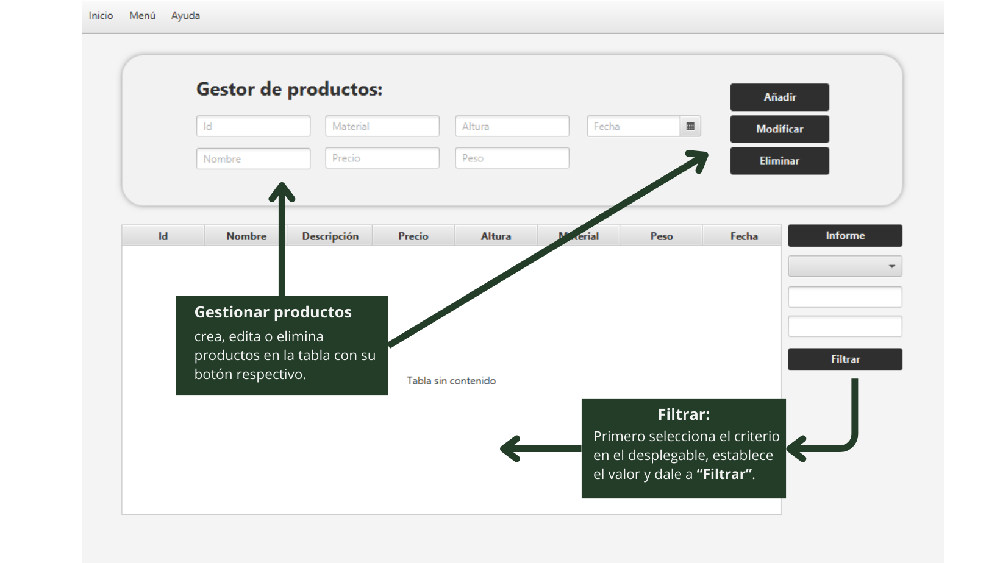

Esta es la ventana de Productos:

Para mayor información consultar el manual.
Funcionalidades Principales:
- Formulario de Gestor de Productos: Permite crear, editar o eliminar productos en la tabla.
- Crear Productos: Rellenar los campos y hacer clic en "Crear".
- Editar Productos: Seleccionar un producto en la tabla, realizar las ediciones y hacer clic en "Modificar".
- Eliminar Productos: Seleccionar un producto y hacer clic en "Eliminar".
- Tabla: Muestra todos los productos, los cambios se reflejan desde el formulario.
- Formulario de Filtrado: Permite filtrar productos según criterios específicos.
- Funcionalidad Adicional: Hacer clic en "Informe" para generar un documento con datos de productos.
Recuerda que puedes utilizar los elementos de la barra de menú para navegar a otras secciones:
- Inicio: Volver a la pantalla de inicio.
- Menú: Acceder a diferentes secciones como Tiendas, Eventos, Perfil y Cerrar Sesión.
- Ayuda: Acceder a la sección de ayuda.
¡Esperamos que encuentres útil esta información mientras trabajas con la gestión de productos!